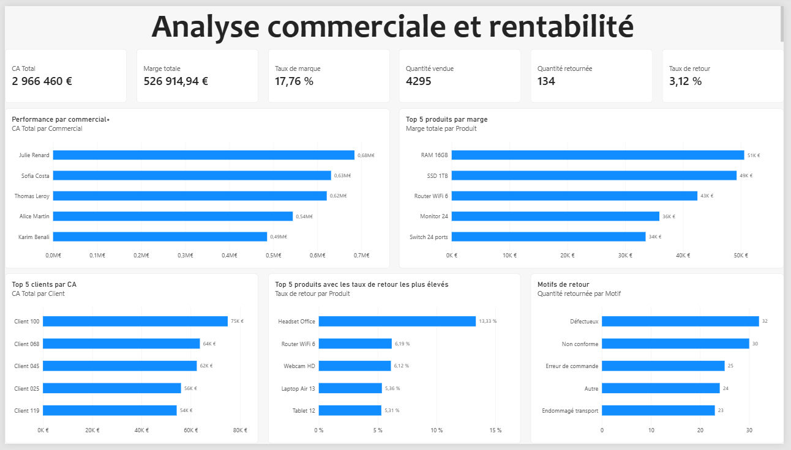
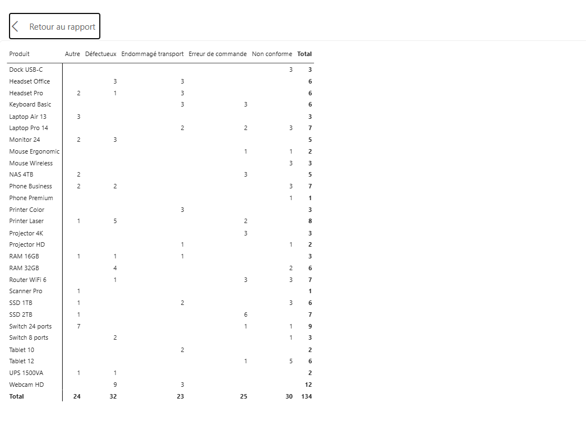

Analyse 002 · Entraînement Power BI
Cas pratique préparé pour un entretienVendre plus ne veut pas toujours dire gagner plus.
Ce projet est un exercice d’entraînement réalisé pour préparer un entretien. Son objectif principal est de développer et démontrer mes compétences en Power BI, en préparation des données et en analyse, à partir d’un cas commercial fictif.
Contexte du projet
Un entraînement, pas une mission client
Le classeur a été conçu comme un cas pratique de recrutement en Data Analyse. Les données, les personnes, les clients et les résultats présentés appartiennent à cet exercice.
Le but n’est donc pas de conseiller une entreprise réelle. Il est de montrer ma capacité à nettoyer un fichier, construire un modèle cohérent, écrire des mesures DAX, créer un dashboard interactif et expliquer les résultats avec prudence.
Démarche guidée
Comment passer du fichier brut à une décision ?
Une analyse sérieuse commence avant les graphiques. Voici le raisonnement suivi, les choix effectués et les questions qui restent ouvertes.
- 01
Formuler le problème
Ne pas chercher « le meilleur », mais comprendre les contributions et les risques
La direction a besoin de savoir qui génère les ventes, quels produits créent de la marge et où les retours peuvent signaler un problème. Ces trois questions sont liées, mais elles ne se répondent pas avec le même indicateur.
RéflexionUn classement fondé uniquement sur le chiffre d'affaires récompenserait le volume sans vérifier la rentabilité ni la qualité des ventes.
- 02
Examiner les données
Contrôler avant de calculer
Le classeur brut contient 652 lignes de ventes, 122 clients, 30 produits et 72 lignes de retours. Le contrôle révèle deux identifiants de vente dupliqués, deux prix unitaires absents, trois quantités non renseignées et plusieurs variantes de libellés comme « IDF » et « Île-de-France ».
Pourquoi c'est importantSans correction, les doublons ajoutent 12 unités artificielles. Des libellés différents créent plusieurs catégories pour une même réalité et faussent les regroupements.
- 03
Choisir les règles
Rendre chaque transformation explicable et reproductible
Une seule ligne est conservée par identifiant de vente. Les prix manquants sont remplacés par le prix moyen observé pour le même produit. Les quantités absentes ne sont pas inventées : elles ne contribuent pas aux volumes. Enfin, les variantes de région, catégorie et statut sont harmonisées.
Alternative possibleOn aurait pu utiliser le prix catalogue à la place du prix moyen. Ce choix aurait produit un chiffre d'affaires différent. Documenter la règle permet à une autre personne de la discuter ou de la remplacer.
- 04
Construire les indicateurs
Donner à chaque KPI une question précise
Chiffre d'affairesQuantité × prix unitaire × (1 − remise)Combien les ventes représentent-elles ?
MargeChiffre d'affaires − coût d'achatCombien reste-t-il après le coût des produits ?
Taux de retourQuantité retournée ÷ quantité vendueQuelle part des unités vendues revient ?
- 05
Croiser les lectures
Transformer un signal en prochaine question
Un taux inhabituel ne donne pas immédiatement une cause. Il indique où approfondir. Le dashboard sert donc à passer du général au particulier : cliquer sur un produit, observer ses KPI, ses clients, ses commerciaux et les motifs associés.
Bonne pratiqueSéparer trois niveaux : le constat visible dans les données, l'hypothèse qui pourrait l'expliquer et l'action qui permettra de la vérifier.
Vue interactive
Explorez les données directement
Les filtres Année, Commercial et Produit recalculent les indicateurs et les graphiques sans compte Power BI.
Chargement des données…
Performance par commercial
Cliquez sur une barre pour filtrer le dashboard. La sélection reste visible en jaune.
Top 5 produits par marge
Cliquez sur un produit pour recalculer tous les autres éléments.
Top 5 clients par chiffre d'affaires
Cliquez sur un client pour explorer son activité.
Produits au taux de retour le plus élevé
Cliquez sur un produit pour examiner son profil.
Motifs de retour
Cliquez sur un motif pour voir les ventes concernées.
Les données du dashboard ne peuvent pas être chargées.
Comparer avec la capture Power BI originale

Lecture 01
Chiffre d'affaires et rentabilité ne sont pas synonymes
Elle est la première contributrice en volume de ventes et génère environ 120 k€ de marge.
Son chiffre d'affaires est plus faible, autour de 486 k€, mais son taux de marge est le plus élevé des cinq commerciaux.
Exemple simple. Une vente de 100 € avec 15 € de marge rapporte moins qu'une vente de 80 € avec 20 € de marge. Le chiffre d'affaires mesure l'activité ; le taux de marge mesure l'efficacité économique de cette activité. Le dashboard évite donc de désigner automatiquement le plus gros vendeur comme le plus rentable.
Constat Julie produit le plus de CA et de marge en valeur. Karim transforme une plus grande part de son CA en marge.
Hypothèses à tester Mix de produits différent, remises moins fortes, clients ou catégories plus rentables.
Données nécessaires Objectifs commerciaux, politique de remise, temps passé et coûts commerciaux complets.
Lecture 02
Beaucoup de retours ou un taux élevé : ce n'est pas la même alerte
Douze unités retournées attirent l'attention sur le volume absolu.
La proportion est forte même si le nombre d'unités retournées est plus faible.
Pourquoi regarder les deux ? Un produit très vendu peut avoir beaucoup de retours tout en gardant un taux raisonnable. À l'inverse, quelques retours sur un produit peu vendu peuvent représenter une part inquiétante. Le volume aide à mesurer la charge opérationnelle ; le taux aide à repérer une fragilité relative.
Constat La Webcam HD crée la plus forte charge de retours. Le Headset Office présente la plus forte fréquence relative.
Décision différente Le volume peut justifier une action logistique ; le taux peut justifier un contrôle qualité même avec peu d'unités.
Point de vigilance Sur un faible nombre de ventes, quelques retours suffisent à faire fortement varier le taux.
Lecture 03
Les motifs précisent où enquêter
32Défectueux
30Non conforme
25Erreur de commande
24Autre
23Transport

Un signal à examiner, pas une cause prouvée
Pour la Webcam HD, 9 retours sur 12 sont classés « défectueux », soit 75 %. C'est un bon motif pour lancer un contrôle qualité ciblé.
Le tableau ne permet toutefois pas d'affirmer que le fournisseur est responsable. Il faudrait compléter l'analyse par des numéros de lot, des dates, des commentaires clients ou des données logistiques.
Restitution
Trois conclusions, puis des actions vérifiables
Une recommandation utile précise le signal observé, l'action proposée et la manière de savoir si elle fonctionne.
La performance commerciale est multidimensionnelle
Julie Renard domine en montant de ventes et de marge, tandis que Karim Benali présente le meilleur taux de marge.
ActionComparer leurs assortiments de produits et leurs niveaux de remise avant de fixer les objectifs.
Les retours globaux restent limités, mais cachent des écarts
Le taux général est de 3,12 %, alors que certains produits dépassent nettement ce niveau.
ActionCréer un seuil d'alerte combinant taux de retour et nombre minimal d'unités vendues.
Les défauts et non-conformités concentrent presque la moitié des retours
Ces deux motifs totalisent 62 unités sur 134, soit environ 46 %.
ActionContrôler d'abord les couples produit–motif les plus concentrés, puis suivre leur évolution après correction.
Comment mesurer l'effet des actions ?
Comparer, pour les produits ciblés, le taux de retour avant et après l'intervention sur une période et un volume suffisants. Vérifier en parallèle que la baisse ne vient pas simplement d'une diminution des ventes.
Construction
Ce que le projet démontre techniquement
Modéliser
Une table calendrier relie les faits et rend les filtres annuels cohérents.
Calculer
Les mesures DAX séparent les calculs métier des colonnes brutes.
Comparer
Top N, taux et volumes répondent à des questions différentes.
Guider
Les interactions sont réglées pour préserver les comparaisons utiles.
Quantité retournée
SUM(Retours[Quantite_Retour])Taux de retour
DIVIDE([Quantité retournée], [Quantité vendue], 0)Transparence
Ce que cette analyse est — et ce qu’elle n’est pas
Il s’agit uniquement d’une analyse d’entraînement réalisée pour préparer un entretien. L’objectif principal est de pratiquer et présenter mes compétences en Power BI et en analyse de données.
Ce travail n’est pas une mission client, une étude officielle ou une analyse des performances d’une entreprise réelle. La provenance et la licence du jeu d’exercice ne figurent pas dans les fichiers reçus.
Les écarts observés servent à exercer le raisonnement analytique. Ils orientent les vérifications, mais ne prouvent pas, à eux seuls, pourquoi une marge est faible ou pourquoi un produit revient.